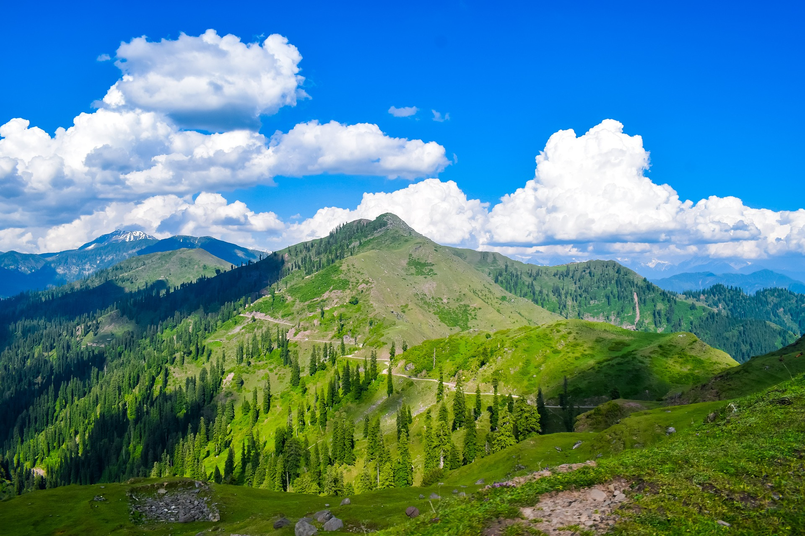
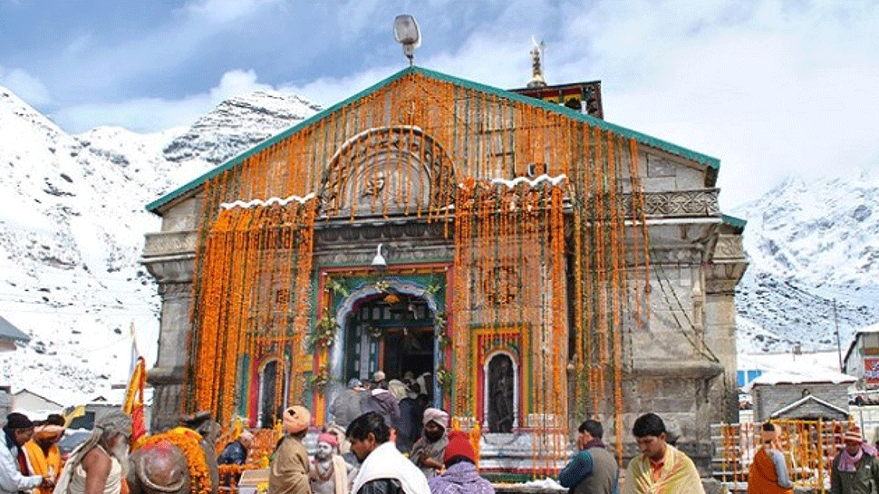
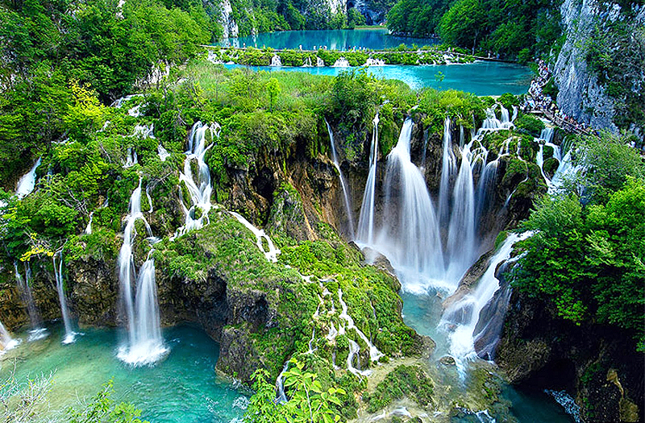
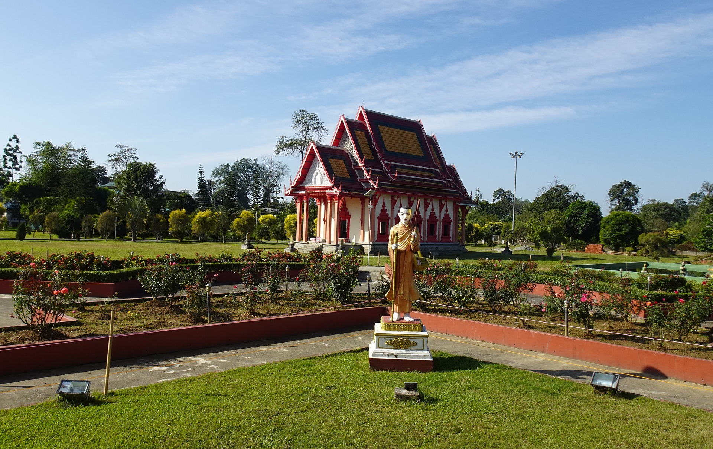
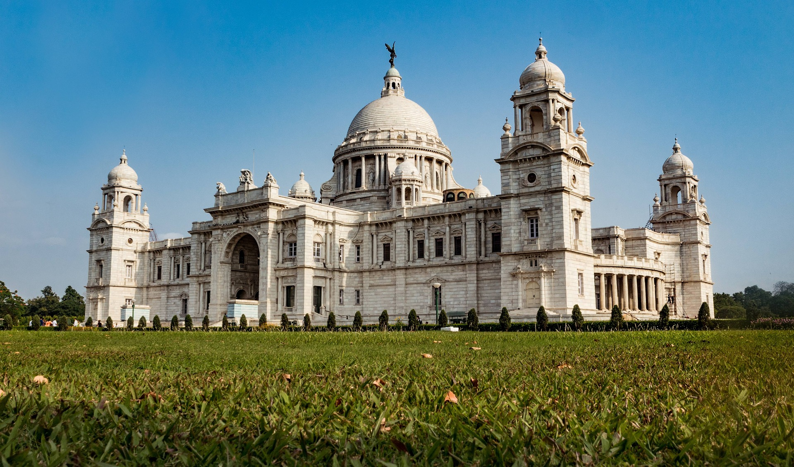
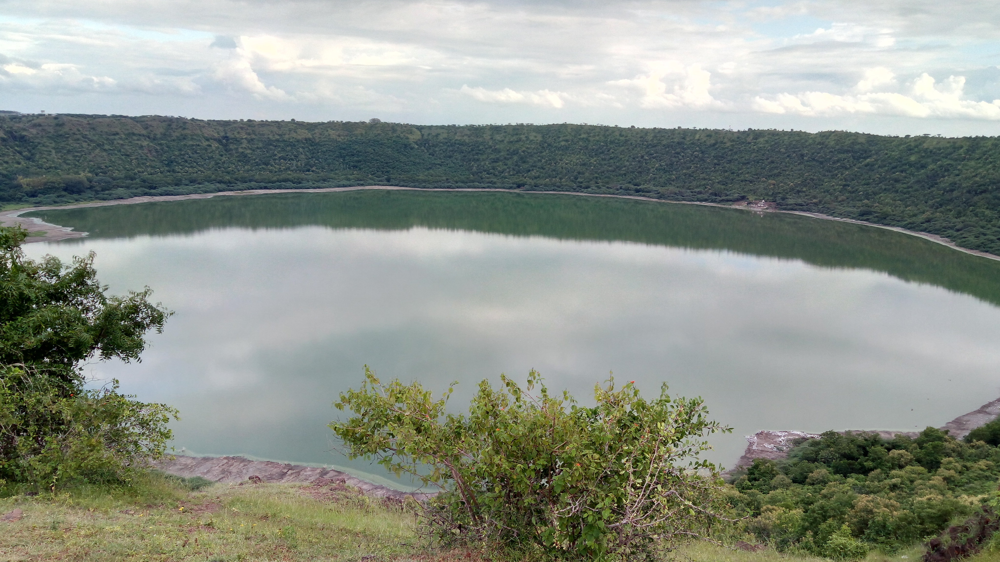

IndiaTourism
The Paradise on Earth-kashmir

Kashmir is located on the Jhelum River in north India. It is always cold here. It is
very beautiful. It is called Paradise on Earth. Its beauty seems very captivating in every season.
In summer
there is greenery everywhere and in winter everything is covered with snow. The red apples hanging
on the
apples look very beautiful. There are many tourist places to see in Kashmir like Gulmarg, Sonmarg
etc.
Gulmarg is called the life of Kashmir. Sarovars like Vullar add to the beauty of Kashmir.
The people of Kashmir are called Kashmiri Pandits and they are very beautiful. They are also
non-vegetarians
and consume kebabs etc. After eating here, it is rotated in sweets. Saffron is cultivated here.
Whoever goes
to this place makes sure to buy show pieces made of walnut wood, apple, Pashmina shawl and saffron.
Kashmir
is a matter of great dispute between India and Pakistan. Kashmir has its own flag and it has its own
constitution under Section 370 of the Constitution of India. No person outside Kashmir can buy land
in
Kashmir.
The Heaven on Earth-kedarnath

Kedarnath is a town and Nagar Panchayat in Rudraprayag district of Uttarakhand, India, known
primarily for the Kedarnath Temple. It is approximately 86 kilometres from Rudraprayag, the district
headquarter. Kedarnath is the most remote of the four Chota Char Dham pilgrimage sites. It is
located in the Himalayas, about 3,583 m (11,755 ft) above sea level near the Chorabari Glacier,
which is the source of the Mandakini river. The town is flanked by snow-capped peaks, most
prominently the Kedarnath Mountain. The nearest road head is at Gaurikund about 16 km away. The town
suffered extensive destruction during June 2013 from the Flash Floods caused by torrential rains in
Uttarakhand state.
Kedarnath is a town and Nagar Panchayat in Rudraprayag district of Uttarakhand, India, known
primarily for the Kedarnath Temple. It is approximately 86 kilometres from Rudraprayag, the district
headquarter. Kedarnath is the most remote of the four Chota Char Dham pilgrimage sites. It is
located in the Himalayas, about 3,583 m (11,755 ft) above sea level near the Chorabari Glacier,
which is the source of the Mandakini river. The town is flanked by snow-capped peaks, most
prominently the Kedarnath Mountain. The nearest road head is at Gaurikund about 16 km away. The town
suffered extensive destruction during June 2013 from the Flash Floods caused by torrential rains in
Uttarakhand state.
Mathura-Uttar Pradesh

Mathura, being the birthplace of Lord Krishna, is one of the important Hindu pilgrimage sites. Every
inch of Mathura is clothed in reverend devotion to Lord Krishna, the eternal lover of Radha, the
warrior, the diplomat and the hero of the cowherd colleagues. Mathura without Lord Krishna is like
Life without Water.
There is hardly any need to mention that the city of Mathura (and the whole of Brajbhumi, for that
matter) is not an ordinary material city, for it is the transcendental abode of Lord Krishna and His
consorts and a Cosmic Place for His Divine ‘Leela’ sport.
You can go on counting the holy places in Mathura without ever coming to an end. This is easily
understandable in light of the fact that there is the legend of Lord Shri Krishna connected to
virtually every nook and corner of the city. For instance, the ‘Vishram Ghat’ on the Yamuna
Waterfront is said to be the holy place where Krishna is supposed to have rested after killing his
tyrannical and evil uncle - King Kamsa.
From the moment Krishna was born up till the time He grew into a valiant youth, the bigger part of
his time was spent in Brajbhumi, mainly constituting Mathura, Vrindavan, Gokul, Nandgaon, Govardhan
and Barsana.
The Pink City-Jaipur,Rajasthan

Jaipur is considered to be the capital of Rajasthan. It is famous across the country for its rich
tradition and diverse culture. The variety of forts and palaces showcase the exciting history of
Jaipur. This city was formed by the Maharaja Sawai Jai Singh II know as a great warrior in the
ancient times.
Although initially the capital of Rajasthan used to be Amber but considering the safety viewpoint,
the capitals were changed later on. Since several construction and architecture were painted with
the colour terracotta pink back in the earlier times, the name of the city popularly became the pink
city.
This city has been trendy amongst the visitors since earlier times, due to the availability of
several famous hotels. One of which is the Raj Vilas which is known widely due to its beautiful
architecture. These palaces in ancient times belonged to the kings and their families. Therefore,
all of these hotels have a bit of royalty in them.
The Elephant Fall-Meghalaya

The Elephant Falls are a two-tier waterfall in Shillong, Meghalaya, India.[1] The mountain stream
descends through two successive falls set in dells of fern-covered rocks.Elephant Falls is situated
at the outskirts of the main city of Shillong in the East Khasi Hills District, Upper Shillong. It
is almost 12 km away from the Shillong city center.A small signboard quite near the Shillong Peak,
marks a small road that turns off to the edge of the mountain. This road leads to the falls.
From the gate, there is a steep, slippery flight of stairs to navigate each level of the fall with
the first and second level facilitated with benches to rest and relax.
A ticket costing 20 INR is required to view the fall with an additional charge of 20 INR for
permission to bring the camera.
The Golden Pagoda-Arunachal Pradesh

The Golden Pagoda of Namsai, also known as Kongmu Kham, in the Tai-Khamti language, is a
Burmese-style Buddhist temple that was opened in 2010. It is located on a 20 hectares (49 acres)
complex in Namsai District of Arunachal Pradesh, India and at a distance of 68 km (42 mi) from the
nearest railway station Tinsukia, Assam. A sum of 3 crore was spent by Arunachal politician Chowna
Mein, who was the local MLA in building the pagoda in a plot provided by the state government. The
World Tripiṭaka Foundation is currently developing Kongmu Kham as the first international Tripiṭaka
centre in India.The Kathina festival is the largest festival celebrated at the Golden Pagoda. The
2016 ceremony, held on 13 November also saw participation from Thai Buddhist monks. An image of
Buddha which was earlier kept at Wat Bowonniwet Vihara known as the Pro Bpor Ror was gifted by the
monks on behalf of the king Bhumibol Adulyadej of Thailand. The Thai monks also presented a Kalpatru
(Money Tree) to the Golden Pagoda. The ceremony of Loi-Krathong, which is marked by the releasing of
floating lamps into the Mungchalinda Buddha pond is also held on the last day of the festival.
The Victoria Memorial-Kolkata,West Bengal

The Victoria Memorial is a large marble building on the Maidan in Central Kolkata, built between
1906 and 1921. It is dedicated to the memory of Queen Victoria, Empress of India from 1876 to 1901.
The largest monument to a monarch anywhere in the world, it stands in 64 acres of gardens and is now
a museum under the control of the Ministry of Culture.Following the death of Queen Victoria in
January 1901,[3] Lord Curzon, the Viceroy of India, suggested that a fitting memorial to the late
Queen-Empress should be created in Calcutta, now called Kolkata, then the capital of British India.
He proposed the construction of a grand building with a museum and gardens.[4] Curzon said,
"Let us, therefore, have a building, stately, spacious, monumental and grand, to which every
newcomer in Calcutta will turn, to which all the resident population, European and Native, will
flock, where all classes will learn the lessons of history and see revived before their eyes the
marvels of the past."
The government officials, princes, politicians, and people of India responded generously to Lord
Curzon's appeal for funds, and the total cost of construction of the monument, amounting to one
crore, five lakhs of Rupees (₹), was entirely derived from their voluntary subscriptions.
The site chosen was near the present-day Raj Bhavan, known at the time as Government House. The
construction of the Victoria Memorial was delayed by Curzon's departure from India in 1905, with a
subsequent loss of local enthusiasm for the project. There was also some uncertainty about the
strength of the foundations, and tests on them were carried out.[7] On 4 January 1906, the new
Prince of Wales laid the foundation stone.
The work of construction was entrusted to Messrs. Martin & Co. of Calcutta, and work on the
superstructure began in 1910.
In 1912, before construction was finished, King George V announced the transfer of the capital of
India from Calcutta to New Delhi.[9] Thus, the Victoria Memorial came to stand in what would be a
major provincial city, rather than a capital.
The Victoria Memorial was completed and formally opened to the public in 1921.[7][8]
After 1947, some additions were made to the Memorial.
A smaller Victoria memorial was also constructed in the Hardoi District, which has since been
converted into a city club for recreation. Mahatma Gandhi addressed meetings at Hardoi in the 1930s.
The Lonar Lake-Buldana,Maharashtra

Lonar Lake, also known as Lonar crater, is a notified National Geo-heritage Monument,[2][3][4]
saline, soda lake, located at Lonar in Buldhana district, Maharashtra, India. Lonar Lake is an
astrobleme created by a meteorite impact during the Pleistocene Epoch.[5][6] It is one of only four
known hyper-velocity impact craters in basaltic rock anywhere on Earth. The other three basaltic
impact structures are in southern Brazil.[7] Lonar Lake has a mean diameter of 1.2 kilometres (3,900
ft) and is about 137 metres (449 ft) below the crater rim. The meteor crater rim is about 1.8
kilometres (5,900 ft) in diameter.[8]
Lonar Crater sits inside the Deccan Plateau – a massive plain of volcanic basalt rock created by
eruptions some 65 million years ago. Its location in this basalt field suggested to some geologists
that it was a volcanic crater. Today, however, Lonar Crater is understood to be the result of a
meteorite impact.[9] The water in the lake is both saline and alkaline.
Geologists, ecologists, archaeologists, naturalists and astronomers have published studies on
various aspects of the ecosystem of this crater lake.[10]
Although the crater's age was previously estimated to be 52,000 ± 6,000 years,[11] newer studies
suggest an age of 576,000 ± 47,000 years.[12][13]
The Smithsonian Institution, the United States Geological Survey, Geological Survey of India, the
University of Sagar and the Physical Research Laboratory have conducted extensive studies of the
site.[14][15] Biological nitrogen fixation was discovered in this lake in 2007.[16]
A 2019 study, conducted by IIT Bombay found that the minerals in the lake soil are very similar to
the minerals found in moon rocks brought back during the Apollo Program.[17] The lake was declared a
protected Ramsar site in November 2020.